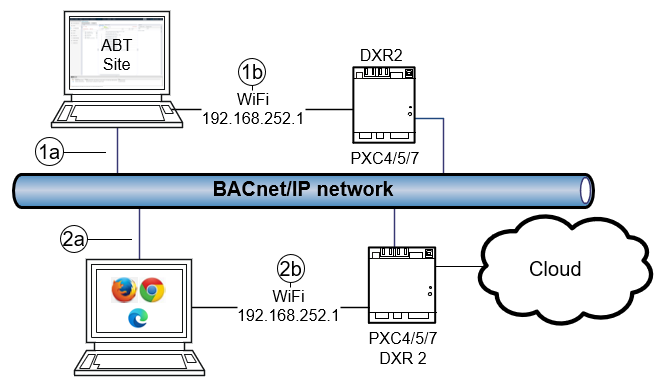
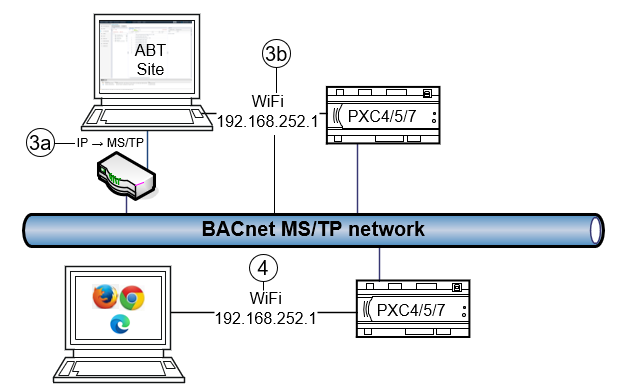

Accessing the PXC4/5/7 and DXR2
The Web server component for the Web interface can be accessed in the following ways:
- As a localhost Web server within ABT Site.
- Use the online component of ABT Site (Startup > Web interface) to access the Web interface through a localhost Web server.
- This instance of the Web interface provides access to each device on the network; you can access both supported IP devices and supported MS/TP devices, such as PXC4/5/7 automation stations for operating and monitoring devices.
- As an embedded Web server in supported devices, such as PXC4/5/7 automation stations.
- Either use the online component of ABT Site (Startup) to open a Web browser or access the device directly through any standard Web browser.
Using the PXC4/5/7 Web interface on a BACnet/IP network
The connection options for using the Web interface on a BACnet/IP network are shown in the following figure.

| Tool | Description |
|---|---|---|
1a 1b | The Web interface in ABT Site | Connections ⓐ and ⓑ in the figure provide access to all devices on the network, such as automation stations, room automation stations and routers. |
2a 2b | External Web browser |
|
Using the PXC4/5/7 Web interface on a BACnet MS/TP network
The connection options for using the Web interface on a BACnet MS/TP network are shown in the following figure.

| Label | Description |
|---|---|---|
3a 3b | The Web interface (ABT Site) | Connections ⓐ and ⓑ in the figure provide access to all devices on the network, such as automation stations, room automation stations and routers. |
4 | External Web browser | Connection is limited to the locally connected device by entering the IP address. |